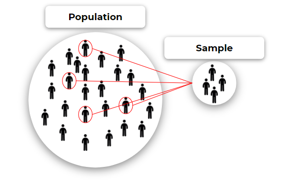

মেশিন লার্নিংয়ে পরিসংখ্যান
মেশিন লার্নিং শিখতে হলে পরিসংখ্যান এর কিছু বিষয় নিয়ে ভাল ধারণা থাকতে হবে। এই চ্যাপ্টারে আমরা পরিসংখ্যানের কিছু গুরুপ্তপূর্ণ টপিক নিয়ে আলোচনা করব যা আমাদের পরবর্তীতে মেশিন লার্নিয় নিয়ে জানতে সহায়ক হিসেবে ভূমিকা পালন করবে।
এই চ্যাপটারে আমরা পরিসংখ্যানের দুইটি প্রকার নিয়ে আলোচনা করব:
- বর্ণনামূূলক পরিসংখ্যন (Descriptive Statistics)
- অনুমানমূল পরিসংখ্যান (Inferential Statistics)
বর্ণনামূলক পরিসংখ্যান
বর্ণনামূলক পরিসংখ্যানে কোন ডেটাসেটের বৈশিষ্ট্য নিয়ে আলোচনা করা হয়। ডেটাসেটের বৈশিষ্ট্য বর্ণনার উদ্দশ্যে গড়, মধ্যম, বিচুত্যি ইত্যাদি বেড় করা হয় এবং চার্ট, টেবিল, গ্রাফ ইত্যাদির মাধ্যমে প্রকাশ করা হয়।
- ডেটা সংগ্রহের বিভিন্ন পদ্ধতি ও তার সুবিধা-অসুবিধা
- নমুনা, পপুলেশন ঔ স্যাম্পলিং ইরর
- ডেটা ভিজ্যুয়ালাইজেশন'
- কেন্দ্রীয় প্রবণতা বা Central Tendency
- কেন্দ্রীয় প্রবণতা বা Central Tendency
ডেটা সংগ্রহের বিভিন্ন পদ্ধতি ও তার সুবিধা-অসুবিধা
-
ডকুমেন্ট ও রেকর্ড অনুসন্ধান:
সুবিধা:
- খুব সহজেই তথ্য সংগ্রহ করা যায়।
- বেশিরভাগ ক্ষেত্রেই সবচেয়ে কম ব্যয়বহুল।
অসুবিধা:
-
তথ্য বর্তমান সময়পোযগী না হওয়ার সম্ভাবনা থাকে।
-
তথ্য ধারনের বিষয়বস্তুু ও ফাক্টর বা প্রভাবকগুলোর উপর খুব কম কতৃত থাকে।
-
অনেকসময় তথ্য সর্বসাধারণের জন্য উন্মুক্ত থাকে না।
-
সারভে ও জিজ্ঞাসাবাদ:
সুবিধা:
- সহজে পরিচালনা করা যায়।
- তুলনামূলক ভাবে কম ব্যায়বহুল।
- অনেক বড় গ্রুপ থেকেও সহজে তথ্য সংগ্রহ করা যায়।
অসুবিধা:
-
ভুল হবার সম্ভাবনা বেশি থাকে।
-
সময় অনেক বেশি লাগতে পারে।
-
তথ্যদানকারী বিভিন্নভাবে প্রভাবিত হয়ে পক্ষপাতমূলক তথ্য দান করতে পারে।
-
পরীক্ষা (Experiment):
সুবিধা:
- সবচেয়ে নির্ভুল ডেটা পাওয়া যায়।
- বিভিন্ন প্রভাবক বা ফাক্টর গুলোকে নিয়ন্ত্রণ করা যায়।
- ডেটা সর্ম্পকে গভীর ধারণা পাওয়া সম্ভব।
অসুবিধা:
-
সবচেযে বেশী ব্যয়বহুল।
-
বড় গ্রুপে করা কষ্ঠসাধ্য ও ব্যয়বহুল।
-
বিষয়বস্তুভেদে তুলনামূলক ভাবে দ্রুত তথ্য সংগ্রহ সম্ভব।
পরীক্ষামূক ভাবে তথ্য সংগ্রহ তিনভাবে করা যেতে পারে:
- নন-ব্লাইন্ডেড (Non Blinded): এই পদ্ধতিতে যাদের থেকে তথ্য সংগ্রহ করা হয় তারা তাদের ওপর কৃত পরীক্ষা ও পদ্ধতি সম্পর্কে জ্ঞাত থাকে।
- ব্লাইন্ডেড (Blinded): এই পদ্ধতিতে যাদের থেকে তথ্য সংগ্রহ করা হয় তারা তাদের ওপর কৃত পরীক্ষা ও পদ্ধতি সম্পর্কে অজ্ঞাত থাকে। এই পদ্ধতিতে পূর্বে উল্লেক্ষিত নন-ব্লাইন্ডেড পদ্ধতি থেকে বেশি নির্ভুল ও Non-biased তথ্য পাওয়া যায়।
- ডাবল-ব্লাইন্ডেড (Double Blinded): এই পদ্ধতিতে যাদের থেকে তথ্য সংগ্রহ করা হয় তারা তাদের ওপর কৃত পরীক্ষা ও পদ্ধতি সম্পর্কে অজ্ঞাত থাকে এবং যারা পরীক্ষার ফলাফল সংগ্রহ ও বিশ্লেষণ করে তারাও অজ্ঞাত থাকে। এই পদ্ধতিতে সবচেয়ে নির্ভুল ও Non-biased তথ্য পাওয়া যায়।
নমুনা, পপুলেশন ঔ স্যাম্পলিং ইরর
পপুলেশন (Population): পরিসংখ্যানের ডেটাসটের আালোচ্য বিযয়বস্তুর সমগ্রগোষ্ঠীকে একত্রে পপুলেশন বলে।
নমুনা বা স্যাম্পল (Sample): পপুলেশনের যেকনো একটি নির্দিষ্ট অংশকে স্যাম্পল বলে। অর্থাৎ স্যাম্পল হল পুপলেশনের একটি উপসেট।
স্যাম্পলিং ইরর (Sampling Error): সকল বিষয়বস্তু বা পপুলেশনের এবং কোন সাম্পল এর উপর কোনো পরিসংখ্যান করলে এদের মানের যে পার্থক্য হয় তাকেই সাম্পলিং ইরর বলে।
যদি স্যাম্পল থেকে প্রাপ্ত গড় \(\bar x\) এবং পপুলেশন থেকে প্রাপ্ত গড় যদি \(\mu\) হয় তাহলে সাম্পলিং ইরর হবে: $$ samplingError = \mu - \bar x $$

নোটস:
- স্যাম্পল থেকে প্রাপ্ত পরিসংখ্যানের ফলাফল ও পপুলেশন থেকে প্রাপ্ত পরিসংখ্যানের ফলাফল অবস্থাভেদে সম্পূর্ণ ভিন্ন হতে পারে।
- একই পপুলেশনের বিভিন্ন উপসেট নিয়ে স্যাম্পল গঠন করলে ঔই স্যাম্পলগুলো থেকে প্রাপ্ত ফলাফল ভিন্ন ভিন্ন হতে পারে।
ডেটা ভিজ্যুয়ালাইজেশন
ঘটন সংখ্যা (Frequency)
অনুপাত বা আপেক্ষিক ঘটন সংখ্যা (Proportion or Relative Frequency)
শতাংশ (Percentage)
শ্রেনী সংখ্যা (Number of Rows):
শ্রেনী ব্যপ্তি (Bin size)
হিস্টোগ্রাম
বার গ্রাফ
কেন্দ্রীয় প্রবণতা বা Central Tendency
সাধারন পরিসংখ্যানে তিন ধরণের কেন্দ্রীয় প্রবণতা আছে:
-
ভূয়িষ্টক বা মোড (Mode)
-
মধ্যমা (Median)
-
গড় (Average)
মোড বা ভূয়িষ্টক (Mode):
রাশিমালার মধ্যে সবচেযে বেশি ফ্রিকুয়েন্সি বা ঘটন সংখ্যা বিশিষ্ট য়ে রাশিটি তাকেই মোড বলে।
উদাহরণ:
রাশিমালা: 1, 2, 3, 56, 6, 2, 7, 213, 7, 7
Mode: 7
রাশিমালার মধ্যে 7 সংখ্যাটির সবচেয়ে বেশি পুনরাবৃত্তি হয়েছে। সুতরাং সংখ্যাটির রাশিমালাটির মোড হবে 7
মোডহীন (No Mode):
যদি সকল রাশির ঘটন সংখ্যা সমান হয় তাহলে ওই রাশিমালায় কোনো Mode থাকে না।
একাধিক মোড:
যদি কোন রাশি মালায় একাধিক রাশির সংখ্যা সর্বোচ্চ হয় তাহলে ওই রাশিমালায় একাধিক নোড হয়।
মোডের বৈশিষ্টসমুহ
- মোড সাংখ্যিক ও শ্রেনীগত উভয় প্রকার তথ্য ব্যবহার করা যায়।
- রাশিমালার সকল রাশি মোড কে প্রভাবিত করে না।
- আমরা যদি একই পপুলেশন থেকে অনেকগুলো সাম্পল নিয়ে সবগুলোর মোড বের করি তাহলে ভিন্ন ভিন্ন মোড পাওয়া যেতে পারে।
- মোডকের কোন গানিতিক সমীকরণ বা Mathemetical Equation এর মাধ্যমে বেড় করা যায় না।
গড় (Mean/Average):
সাধারণ অর্থে গড় বলতে সমজাতীয় রাশিগুলোর সমষ্টিকে রাশির সংখ্যা দ্বারা ভাগ করলে যে ভাগফল পাওয়া যায় তাকেই গড় (Average) বলে।
ফরমুলা:
স্যম্পল ডাটাসেটর ক্ষেত্রে,
অথবা
পপুলেশনের ক্ষেত্রে,
উদাহরন:
রাশিমালা: 48, 57, 43, 30, 60
গড়: = 47.6
গড়ের বৈশিষ্ট্য:
- রাশিমালার সমস্ত রাশি গড় কে প্রভাবিত করে।
- গড়কে গানিতিক সমীকরণের মাধ্যমে প্রকাশ করা যায়।
- একই পপুলেশন থেকে ভিন্ন্ ভিন্ন স্যাম্পল বা নমুনা নিয়ে তা থেকে যে গড় পাওয়া যায় তা সমান হওয়ার সম্ভাবনা থাকে।
- কোনো স্যাম্পল থেকে প্রাপ্ত গড় থেকে পুলেশনের বিষয়ে অনুমান করা যায়।
- আমরা যদি রাশিমালার মধ্যে কোনো চরম মান বিশিষ্ট রাশি বা Extreme Value (সর্বনিম্ম বা সর্বোচ্চ মান ) সংযোজন করি তাহলে গড় পরিবর্তন হবে।
মধ্যমা বা মধ্যমান (Median)
মাঝামাঝি অবস্থানকারি মান কে মধ্যমা বা মধ্যমান বলে। মধ্যমান বেড় করতে হলে রাশিমালার রাশি গুলোকে আগে সর্ট করতে হবে। তবে এক্ষেত্রে সর্টিংয়ের অর্ডার ইচ্ছামত হতে পারে অর্থাৎ ছোট থেকে বড় বা বড় থেকে ছোট হলেও মধ্যমা একই হব।
ফরমুলা:
যখন রাশিমালায় রাশির সংখ্যা n জোড় (Even) হবে:
যখন রাশিমালায় রাশির সংখ্যা n বিজোড় (Odd) হবে:
এখানে বলতে ডাটাসেটের n তমপদ বুঝায়।
উদাহরন:
রাশিমালা: 48, 57, 43, 30, 60
প্রথমে রাশিগুলোকে সর্ট করতে হবে:
30, 43, 48, 56, 60
মধ্যমা: 48
এখানে 48 রাশিটি মাঝামাঝি অবস্থান করে। সুতরাং রাশিমালার মধ্যমা হবে 48
বিভিন্ন ধরণের ডিস্ট্রিবিউশনে কেন্দ্রীয় প্রবণতার মান:

Negative / Left Skewed distribution: Mean < Median < Mode
Normal Distribution: Mean = Median = Mode
Possitive/ Right Skewed Distribution: Mean > Median > Mode
বিচ্যুতি (Deviation)
| বিচ্যুতি Deviation | পরম বিচ্যুতি Absolute Deviation | বর্গ বিচ্যুতি Squared Deviation | |
|---|---|---|---|
| ফরমূলা | \[ x - \bar x \] | \[ |x - \bar x|\] | \[ (x - \bar x)^2\] |
| গড় বিচ্যুতি Avg. Deviation D | গড় পরম বিচ্যুতি Avg. Abs. Deviation AD | গড় বর্গ বিচ্যুতি Avg. Squared Deviation SS (\( \sigma^2\)) | আদর্শ বিচ্যুতি Standard Deviation SD (\(\sigma\)) | Bessel's correction নমুনা আদর্শ বিচ্যুতি Sample Standard Deviation S | |
|---|---|---|---|---|---|
| ফরমূলা | \[ \frac{\sum(x - \bar x)}{n} \] | \[ \frac{\sum{|x - \bar x|}}{n} \] | \[ \frac{\sum(x - \bar x)^2}{n} \] | \[ \sigma = \sqrt {\frac{\sum(x - \bar x)^2}{n}} \] | \[ S = \sqrt {\frac{\sum(x - \bar x)^2}{n-1}} \] |
আদর্শ বিচ্যুতির বৈশিষ্ট্য:
-
ডেটাসেটের 68% রাশি \( \bar x - \sigma \) এবং \( \bar x + \sigma \) রেঞ্জের মধ্যে পরে
-
ডেটাসেটের 95% রাশি \( \bar x - 2\sigma \) এবং \( \bar x +2\sigma \) রেঞ্জের মধ্যে পরে

Bessel's Correction on Standard Deviation